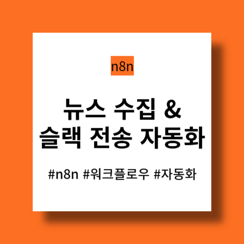
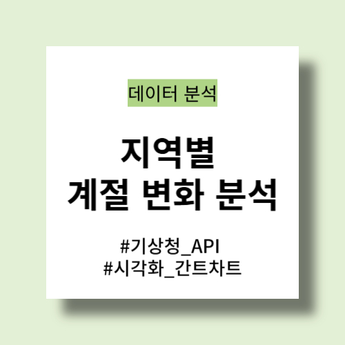
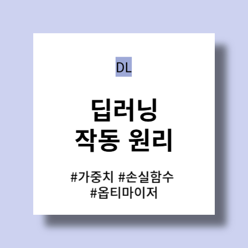

PROJECTS
업무 프로젝트에서 맡은 역할과 기여 범위를 간결하게 정리했습니다.
카드 클릭 시 프로젝트별 상세 내용을 확인할 수 있습니다.
업무 프로젝트에서 맡은 역할과 기여 범위를 간결하게 정리했습니다.
카드 클릭 시 프로젝트별 상세 내용을 확인할 수 있습니다.
개인 프로젝트와 분석을 모아 정리했습니다.
카드 클릭 시 프로젝트별 상세 내용을 확인할 수 있습니다.
23년 6월부터 '데이터 사이언스로 한걸음' 블로그를 운영 중입니다.
매일의 발견과 지금까지 겪었던 시행착오에 관해 기록합니다.

이 글에서는 n8n 입문 단계의 실습으로 '정해진 시간에 뉴스를 수집하고, 슬랙으로 전송하는 방법'을 소개합니다. 매일 아침 9시에 자동으로 '삼성전자' 뉴스를 수집하고, 슬랙으로 전송하는 n8n 워크플로우를 작업합니다.

이 글에서는 실제 기상 데이터를 기반으로 계절 변화를 시각화하여 정말 사계절이 뚜렷한지, 지역별로 사계절은 얼마나 차이 나는지 확인합니다. '기온'을 기준으로 계절별로 정량적인 구분을 정의하고, 동일한 기준을 각각의 도시에 적용하여 분석합니다.

이 글에서는 딥러닝의 작동 원리에 대해 설명합니다. 가중치, 손실 함수, 옵티마이저 3개의 그림으로 딥러닝의 작동 원리와 '정확한 가중치 값을 찾는 것'인 딥러닝의 목표를 이해합니다.
Data Scientist · Analytics & ML